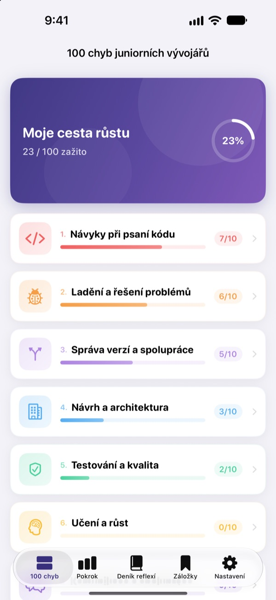
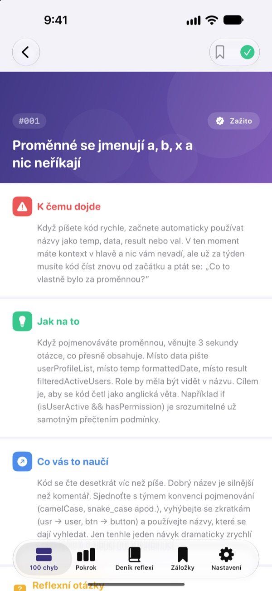
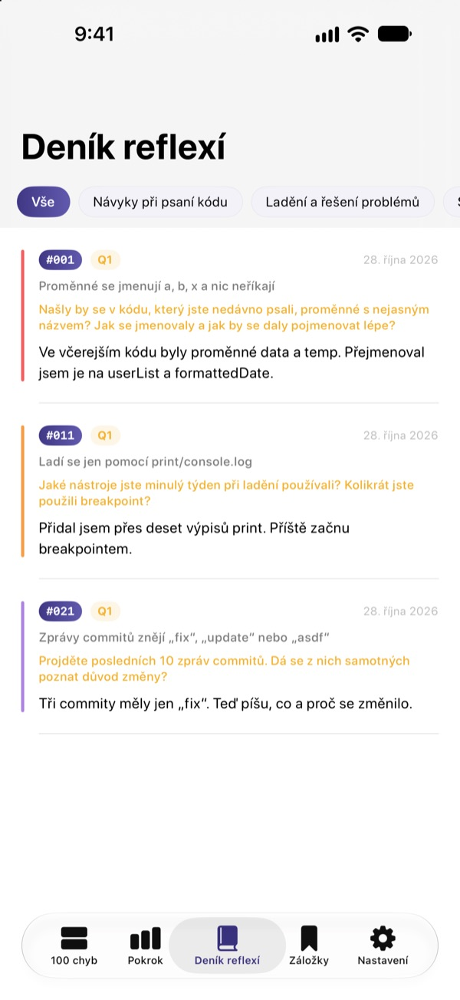
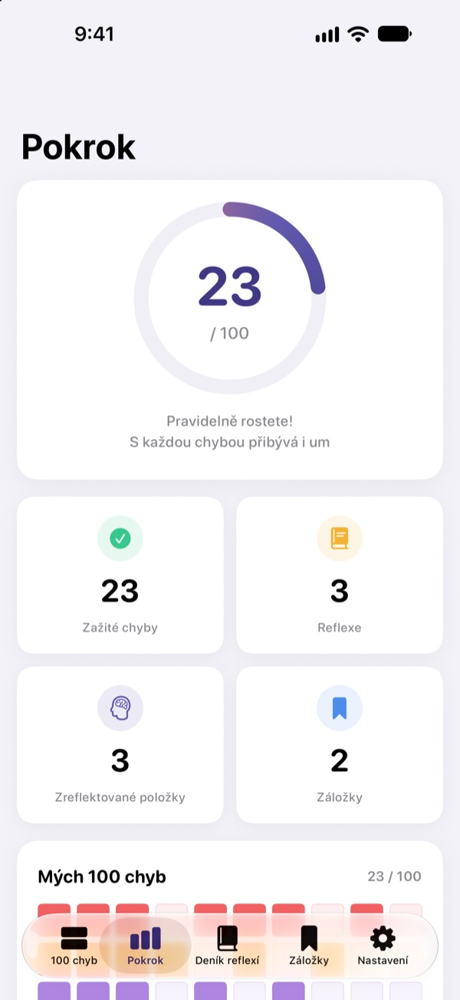

Poznejte chyby dřív,
než vás bolí
100 chyb, které začínající vývojáři dělají nejčastěji, na jednom místě. U každé si přečtete, co se stane, co dělat a co si z toho odnést, a odpovíte na otázku k reflexi, abyste stejnou chybu neudělali dvakrát.
Prvních 30 chyb je zdarma. Pro iPhone, iPad a Mac.

Otevřete si jednu chybu
Tohle je 10 chyb z první bezplatné kategorie, slovo od slova jako v aplikaci. Ty, které jste už zažili, označte jako Zažito.
Zase stejná poznámka v code review?
Nesrozumitelné názvy proměnných, funkce na 200 řádků, zkopírovaný kód. Každý senior tím prošel, ale člověk to většinou zjistí, až když do toho spadne. 100 chyb vám ty chyby ukáže předem a nechá vás zamyslet se nad vlastní prací, abyste je neopakovali.
Co se stane, co dělat, co si odnést
Každá chyba je rozebraná ve třech částech: co se stane, co dělat a co se z ní naučíte.
Deset kategorií od návyků při psaní kódu po bezpečnost a výkon, jen s chybami, které se ve skutečných týmech pořád opakují.

Otázky k reflexi, aby to zůstalo
Ke každé chybě jsou 4 otázky k reflexi, celkem 400. Odpovídejte s myšlenkou na vlastní projekty a z přečteného se stane zkušenost.
Odpovědi se ukládají do deníku reflexí podle kategorií, kdykoli se k nim můžete vrátit.

Uvidíte, kam jste se posunuli
Odškrtávejte chyby, které jste zažili, a pokrok roste po kategoriích i celkově. Co se chcete vrátit, si uložte do záložek.
Vše se synchronizuje přes iCloud mezi iPhonem, iPadem a Macem.

Tři kroky na začátek
- 1
Vyberte kategorii
Návyky při psaní kódu, ladění a správa verzí jsou zdarma.
- 2
Přečtěte a odškrtněte
U chyb, které jste sami udělali, klepněte na Zažito.
- 3
Zamyslete se
Napište odpověď, klidně krátkou. Uloží se do deníku reflexí.
10 kategorií
- Návyky při psaní kódu
- #001–#010 · Zdarma
- Ladění a řešení problémů
- #011–#020 · Zdarma
- Správa verzí a spolupráce
- #021–#030 · Zdarma
- Návrh a architektura
- #031–#040 · PRO
- Testování a kvalita
- #041–#050 · PRO
- Učení a růst
- #051–#060 · PRO
- Komunikace a spolupráce
- #061–#070 · PRO
- Nasazení a provoz
- #071–#080 · PRO
- Bezpečnost a data
- #081–#090 · PRO
- Výkon a optimalizace
- #091–#100 · PRO
Každá kategorie má 10 chyb a každá chyba 4 otázky k reflexi.
30 zdarma. Všech 100 s PRO.
Zdarma
- První 3 kategorie, 30 chyb
- Jejich 120 otázek k reflexi
- Checklist, deník reflexí, pokrok a záložky
- Synchronizace přes iCloud (iPhone, iPad, Mac)
100 chyb PRO
- Zbylých 7 kategorií, dalších 70 chyb (#031–#100)
- Dalších 280 otázek k reflexi
- Všechny budoucí aktualizace obsahu
Měsíční nebo roční předplatné (až o 50 % levnější než měsíční), nebo jednorázový doživotní nákup.
Žádná osobní data, žádné analytické nástroje, žádné reklamy.
Časté dotazy
Co je zdarma?
Všech 30 chyb i s otázkami v kategoriích Návyky při psaní kódu, Ladění a řešení problémů a Správa verzí a spolupráce. Checklist, deník reflexí, pokrok, záložky i synchronizace přes iCloud jsou také zdarma.
Jak používat PRO na jiném zařízení?
Přihlaste se stejným Apple ID a na obrazovce předplatného klepněte na Obnovit nákupy.
Jak zruším předplatné?
Kdykoli v Nastavení › Apple ID › Předplatná. Předplatné se automaticky obnoví, pokud ho nezrušíte nejméně 24 hodin před koncem aktuálního období. Doživotní nákup platíte jen jednou.
Data se mezi zařízeními nesynchronizují.
Zkontrolujte, že jsou všechna zařízení přihlášená do iCloudu stejným Apple ID a že má aplikace v Nastavení zapnutý iCloud. Synchronizace potřebuje i připojení k síti.
Jak všechno smazat?
V nastavení aplikace klepněte na Smazat všechna data. Označení, odpovědi i záložky se smažou a nejde to vrátit.
Na jakých zařízeních aplikace funguje?
Na iPhonu, iPadu a Macu. PRO se odemkne na všech zařízeních se stejným Apple ID.
Posílají se moje data někam?
Ne. Označení a odpovědi zůstávají jen ve vašich zařízeních a ve vašem iCloudu. Aplikace nesbírá osobní data a nemá analytické nástroje ani reklamy.
Dotazy nebo návrhy posílejte na leeo@kakao.com.